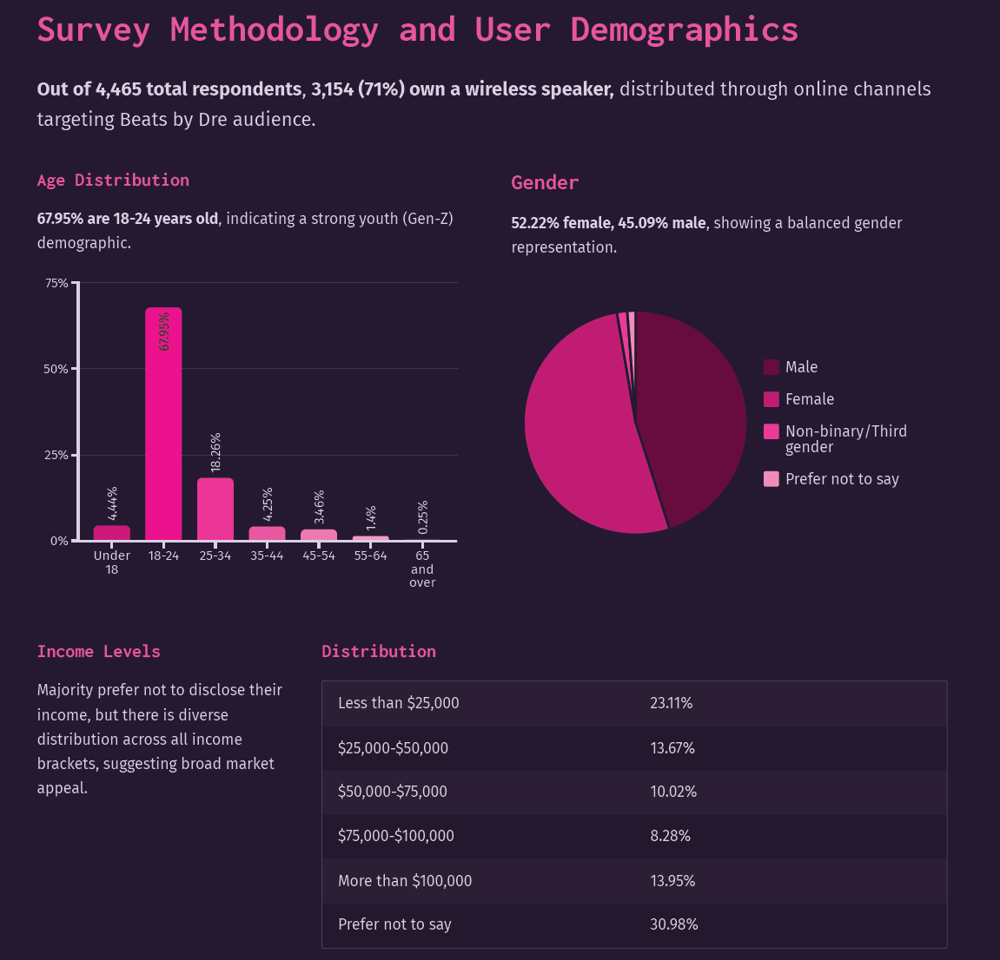
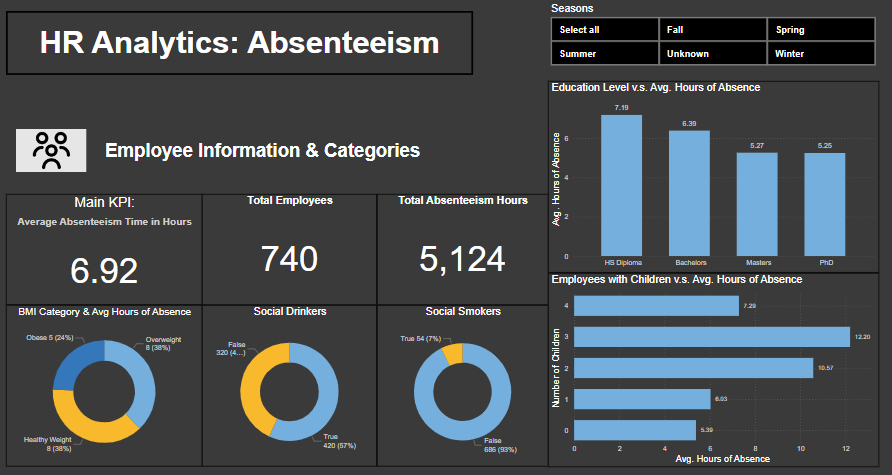
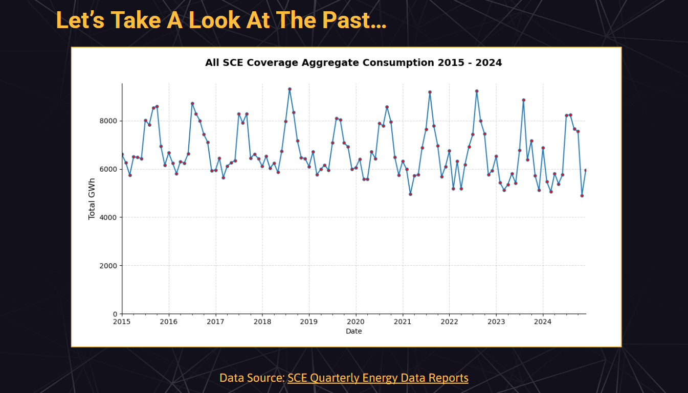
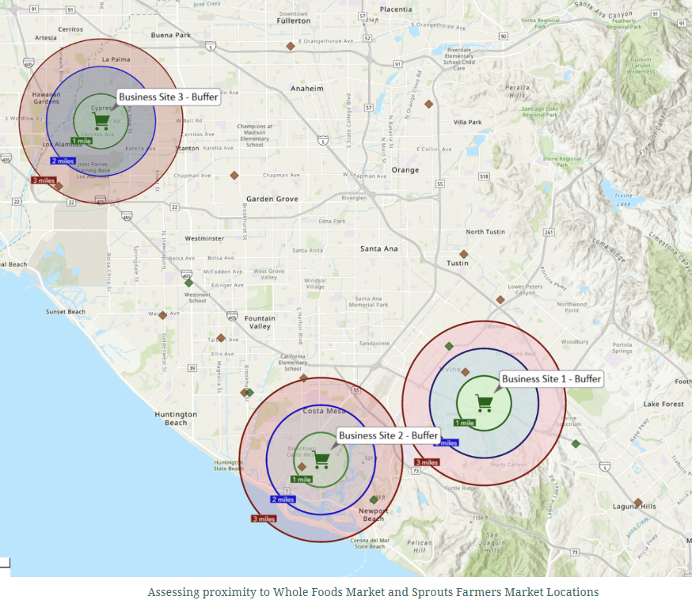
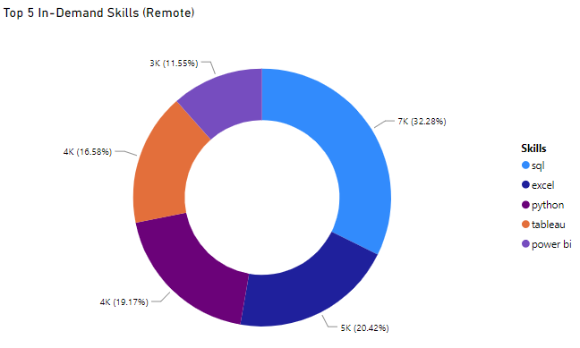
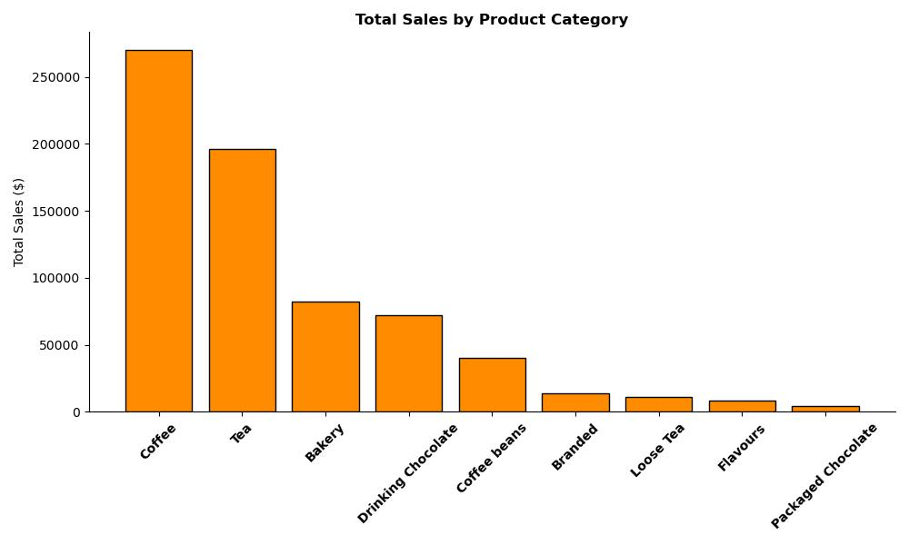
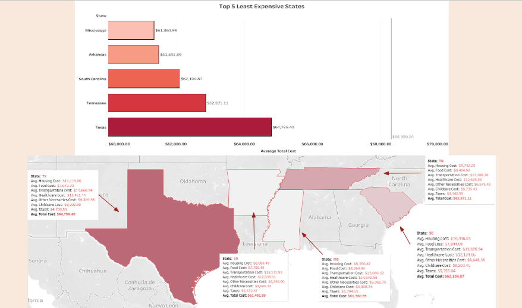
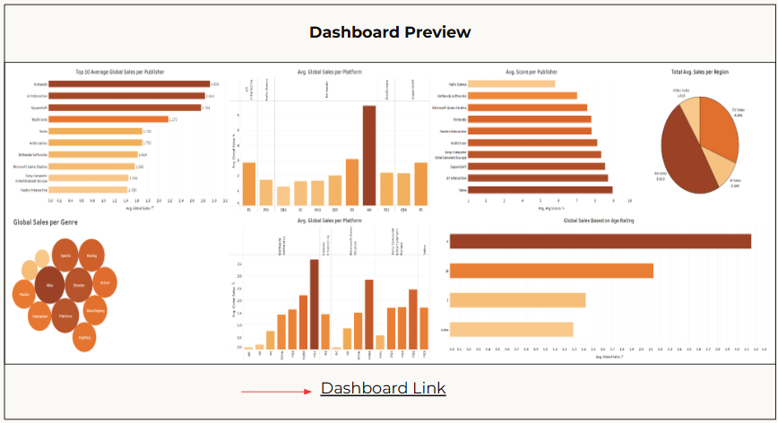
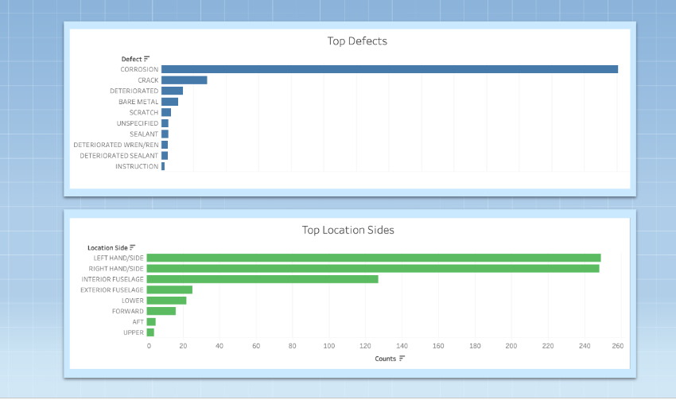
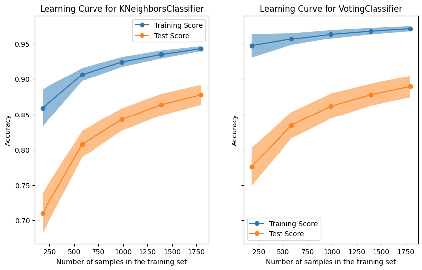

Conducted an in-depth market analysis and developed a strategic business presentation recommending the launch of a high-fidelity wireless speaker for Beats by Dre.
Analyzed survey data from 3,000+ respondents to assess market demand, pricing, and competitive positioning. Delivered a go-to-market strategy, risk assessment, and actionable insights to position Beats in the premium wireless speaker space.
The final presentation synthesized complex research into a clear, data-driven recommendation, demonstrating expertise in market research, strategy, and business communication.


This project analyzes employee data from a human resources related database, particularly
querying employee health information and absenteeism data to determine eligibility for programs
providing bonuses. This analysis also provides a dasboard with absenteeism as the main KPI, for HR to gain insights into employee-related factors that may affect it.

This project forecasts and analyzes energy consumption trends of SoCal Edison customers,
forecasts are projected for 2025.Q1-2025.Q4 for all customer energy usage and by county,
includes outlined strategies for resource allocation and energy-saving initiatives.

Utilized ArcGIS tools and Esri data sources to perform demographic and spatial analyses to determine the best locations in O.C. for Premium Health Grocery Stores.
Preprocessed geospatial data and developed suitability score analysis to select the optimal sites. Visualized with spatial maps and assessed their viability.

Conducted an analysis on the job market for Data Analysts, looking at what the top paying Data Analysts roles are and the skills associated with them, finding out the most in-demand and optimal skills for high-paying positions.
Utilized advanced SQL for complex query crafting and PowerBI for visualizations of insights.

Performed time-series analysis techniques to analyze overall sales trends over a six-month period (June - January 2023),
as well as comparative analyses to highlight the best and worst selling products and forecasting the next 30-day sales using ARIMA.

Analyzed annual living costs and income from 1,877 counties to determine which locations are the most affordable, narrowed down the top states and counties within for affordable living based on family-size and average income.

Created a sales analysis and strategy for a fictional start-up gaming company, employed a Multiple Regression model to determine attributes that postiviely impact global sales and constructed a dashboard to gain visual insights from the companies with the top global sales.

Developed a text mining analysis and used a large-language model to derive insights from aircraft maintenance records focused on corrosion data, and highlighted corrosion distribution across aircraft structures.

Utilizing and comparing various machine learning algorithms to classify and predict surges or pre-cursors (state before surges) on cryptocurrencies to aid in decision-making for smart and timely investing.